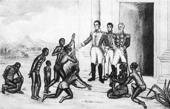

Lezione 15  L’indipendenza dell’America Latina
L’indipendenza dell’America Latina

Poeti a lui contemporanei e poeti a venire scrivono per Simón Bolívar.
Si rivolgono a lui e alla sua vita straordinaria, dal giorno del suo giuramento sul monte Aventino a Roma (“Per il Dio dei miei genitori giuro per loro, giuro per il mio onore e giuro per la Patria, che non darò pace al mio braccio, né riposo alla mia anima, finché non avrò spezzato le catene che ci opprimono”) alle infinite battaglie per dar vita a un’unica grande Confederazione dell’America Latina liberata: un sogno destinato a non realizzarsi.
«Politico, soldato, eroe, oratore e poeta, grande in tutto, possente quando alza la spada, cortese quando alza un fiore» lo descrive Luis Florens Torres.
«Bolívar: siamo qui. Siamo i popoli liberi
di America: Bolívar» lo apostrofa Juan de Jesus Reyes.
Il poeta cileno Pablo Neruda lo consacra “padre” del paese e del mondo, per il passato e per il presente.
«Padre nostro che sei nella terra,
nell’acqua, nell’aria
della nostra immensa silenziosa latitudine,
ogni cosa nel nostro luogo porta il tuo nome, padre:
il tuo nome solleva la canna alla dolcezza,
lo stagno bolívar ha splendore bolívar,
l’uccello bolívar sul vulcano bolívar,
la patata, il salnitro, le ombre singolari
le correnti, le vene di pietra fosforica,
tutto quello ch’è nostro viene dalla tua spenta vita:
ci hai lasciato fiumi, pianure, campanili,
e il nostro pane di ogni giorno, padre.
La tua piccola salma di valente capitano
ha esteso nello spazio la sua metallica forma:
d’improvviso spuntano le tue dita dalla neve
e il pescatore australe porta alla luce d’improvviso
il tuo sorriso, la tua voce che sussulta nelle reti.
Di che colore la rosa che alziamo vicino alla tua anima?
Rossa sarà la rosa a ricordare il tuo passo.
Come saranno le mani che toccano le tue ceneri?
Rosse le mani che nascono dalle tue ceneri.
E com’è la semente del tuo morto cuore?
Rossa è la semente del tuo cuore vivo.
E per esso un cerchio di mani si unisce ora a te.
Alla mia s’unisce un’altra mano e a questa un’altra,
e un’altra ancora, giù fino al fondo del continente nero.
E un’altra mano che non conoscesti allora
viene pure, Bolívar, a stringere la tua.
De Teruel, da Madrid, dal Jarama, dall’Ebro,
dalla prigione, dall’aria, dai morti della Spagna
arriva questa mano rossa, figlia della tua.
Capitano, combattente, dove una bocca
grida Libertà, dove un orecchio ascolta,
dove un soldato rosso rompe una fronte di mulatto,
dove un lauro di liberi uomini germoglia, dove una nuova
bandiera s’adorna del sangue della nostra chiara aurora,
Bolívar, capitano, s’indovina il tuo volto,
ancora tra polvere e fumo rinasce la tua spada.
Ancora la tua bandiera è ricamata col sangue.
I malvagi attaccano il tuo seme nuovamente:
su altra croce chiodato sta il figlio dell’uomo.
Ma verso la speranza ci guida la tua ombra:
l’alloro è la luce del tuo esercito rosso
dalla notte d’America guarda con i tuoi occhi.
I tuoi occhi vigilano al di là dei mari,
al di là dei popoli oppressi e feriti,
al di là delle nere città incendiate,
la tua voce rinasce, un’altra volta nasce la tua mano:
il tuo esercito difende le bandiere consacrate:
e un urlo tremendo di dolore
precede l’aurora rossa del sangue dell’uomo.
Liberatore, un mondo di pace nacque nelle tue braccia.
La pace, il pane, il grano nacquero dal tuo sangue:
dal nostro giovane sangue venuto dal tuo sangue
verrà pace, pane e grano per il mondo che faremo.
Conobbi Bolívar una lenta mattina
a Madrid, all’entrata del Quinto Reggimento.
«Padre», gli dissi, «sei o non sei tu, o tu chi sei?»
E guardando il Cuartel de la Montaña, disse:
«Mi sveglio ogni cent’anni quando il popolo si sveglia».
Un canto per Bolivar
da Pablo Neruda, Poesie
Trad. di Salvatore Quasimodo